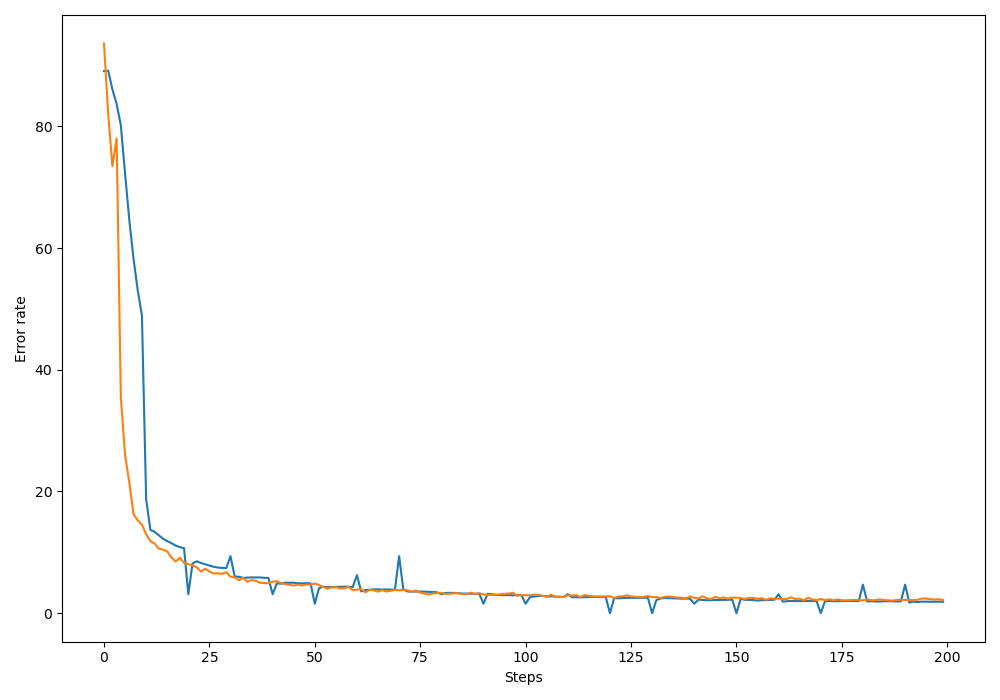

写在前面 手写数字识别器是一个经典的卷积神经网络问题，这里将利用PyTorch实验手写数字识别器的任务。
数据准备 首先导入所有需要的库
1 2 3 4 5 6 7 8 9 10 11 12 13 14 import torchimport torch.nn as nnfrom torch.autograd import Variableimport torch.optim as optimimport torch.nn.functional as Fimport torchvision.datasets as dsetsimport torchvision.transforms as transformsimport matplotlib.pyplot as pltimport numpy as npimport osos.environ["KMP_DUPLICATE_LIB_OK" ]="TRUE"
接着定义一些训练用的超参数
1 2 3 4 image_size = 28 num_classes = 10 num_epochs = 20 batch_size = 64
然后导入数据，Pytorch中自带了我们需要的手写数据集MNIST。
1 2 3 4 5 6 7 8 9 10 11 12 13 14 15 16 17 18 19 20 21 22 23 24 25 26 27 28 29 30 31 32 33 34 35 36 37 38 39 train_dataset = dsets.MNIST(root='./data' , train=True , transform=transforms.ToTensor(), download=True ) test_dataset = dsets.MNIST(root='./data' , train=False , transform=transforms.ToTensor()) train_loader = torch.utils.data.DataLoader(dataset=train_dataset, batch_size=batch_size, shuffle=True ) indices = range(len(test_dataset)) indices_val = indices[:5000 ] indices_test = indices[5000 :] sampler_val = torch.utils.data.sampler.SubsetRandomSampler(indices_val) sampler_test = torch.utils.data.sampler.SubsetRandomSampler(indices_test) validation_loader = torch.utils.data.DataLoader(dataset=test_dataset, batch_size=batch_size, shuffle=False , sampler=sampler_val) test_loader = torch.utils.data.DataLoader(dataset=test_dataset, batch_size=batch_size, shuffle=False , sampler=sampler_test)
数据集（dataset）是对整个数据的封装，无论原始数据是图像还是张量，数据集都将对其进行统一处理。
加载器（dataloader）主要负责在程序中对数据集的使用。
采样器（sampler）为加载器提供了一个每一批抽取数据集中样本的方法。
构建网络 这里主要利用PyTorch的nn.Module类来构建卷积神经网络。
首先，构造ConvNet类，它是对nn.Module类的继承。
其次，复写init()和forward()两个函数。init()为构造函数，每当类ConvNet被具体化一个实例的时候就会被调用。forward()函数则是在正向运行神经网络时被自动调用，负责数据的向前传递，并同时构造计算图。
然后，定义一个retrieve_features()函数，用来提取网络中各个卷积层的权重。
1 2 3 4 5 6 7 8 9 10 11 12 13 14 15 16 17 18 19 20 21 22 23 24 25 26 27 28 29 30 31 32 33 34 35 36 37 38 39 40 41 42 43 44 45 46 47 48 49 50 51 52 53 54 55 56 57 58 59 depth = [4 , 8 ] class ConvNet (nn.Module ): def __init__ (self ): super(ConvNet, self).__init__() self.conv1 = nn.Conv2d(1 , 4 , 5 , padding = 2 ) self.pool = nn.MaxPool2d(2 , 2 ) self.conv2 = nn.Conv2d(depth[0 ], depth[1 ], 5 , padding = 2 ) self.fc1 = nn.Linear(image_size // 4 * image_size // 4 * depth[1 ], 512 ) self.fc2 = nn.Linear(512 , num_classes) def forward (self, x ): x = self.conv1(x) x = F.relu(x) x = self.pool(x) x = self.conv2(x) x = F.relu(x) x = self.pool(x) x = x.view(-1 , image_size // 4 * image_size // 4 *depth[1 ]) x = F.relu(self.fc1(x)) x = F.dropout(x, training=self.training) x = self.fc2(x) x = F.log_softmax(x, dim=1 ) return x def retrieve_features (self, x ): feature_map1 = F.relu(self.conv1(x)) x = self.pool(feature_map1) feature_map2 = F.relu(self.conv2(x)) return (feature_map1, feature_map2)
在以上代码中用到了dropout()函数，该函数用来防止神经网络的过拟合情况。在训练过程中，根据一定的概率随机将其中的一些神经元暂时丢弃，最后在测试的时候再使用全部的神经元，增强模型的泛化能力。
运行模型 构建好ConvNet之后，就可以读取数据并训练模型了。
1 2 3 4 5 6 7 8 9 10 11 12 13 14 15 16 17 18 19 20 21 22 23 24 25 26 27 28 29 30 31 32 33 34 35 36 37 38 39 40 41 42 43 44 45 46 47 48 49 50 51 52 53 54 55 56 57 58 59 60 61 62 63 64 65 66 67 68 69 70 71 72 73 74 net = ConvNet() criterion = nn.CrossEntropyLoss() optimizer = optim.SGD(net.parameters(), lr=0.001 , momentum=0.9 ) record = [] weights = [] def rightness (output, target ): preds = output.data.max(dim=1 , keepdim=True )[1 ] return preds.eq(target.data.view_as(preds)).cpu().sum(), len(target) for epoch in range(num_epochs): train_rights = [] '''下面的enumerate起到构造枚举器的作用，在对train_loader做循环迭代时，enumerate会自动输出一个数字指示循环了几次 并记录在batch_idx中，它就等于0，1，2，...train_loader每迭代一次，就会输出一对数据data和target,分别对应一个批中的 手写数字图及对应的标签。''' for batch_idx, (data, target) in enumerate(train_loader): data, target = Variable(data), Variable(target) net.train() output = net(data) loss = criterion(output, target) optimizer.zero_grad() loss.backward() optimizer.step() right = rightness(output, target) train_rights.append(right) if batch_idx % 100 == 0 : net.eval() val_rights = [] for (data, target) in validation_loader: data, target = Variable(data), Variable(target) output = net(data) right = rightness(output, target) val_rights.append(right) train_r = (sum([tup[0 ] for tup in train_rights]),sum([tup[1 ] for tup in train_rights])) val_r = (sum([tup[0 ] for tup in val_rights]),sum([tup[1 ] for tup in val_rights])) record.append((100 - 100. * train_r[0 ] / train_r[1 ], 100 - 100. * val_r[0 ] / val_r[1 ])) weights.append([net.conv1.weight.data.clone(), net.conv1.bias.data.clone(), net.conv2.weight.data.clone(), net.conv2.bias.data.clone()])
以上代码中，net.train()会打开所有的dropout层，而net.eval()会关闭它们。
测试模型 1 2 3 4 5 6 7 8 9 10 11 12 13 14 15 16 17 18 19 20 21 22 23 24 net.eval() vals = [] for data, target in test_loader: with torch.no_grad(): data = Variable(data) target = Variable(target) output = net(data) val = rightness(output, target) vals.append(val) rights = (sum([tup[0 ] for tup in vals]),sum([tup[1 ] for tup in vals])) right_rate = 1.0 * rights[0 ] / rights[1 ] print(right_rate) plt.figure(figsize = (10 , 7 )) plt.plot(record) plt.xlabel('Steps' ) plt.ylabel('Error rate' ) plt.show()
最后，将训练过程中的误差曲线绘制出来。

图中左边浅色的为校验数据错误率曲线，右边深色的为测试数据错误率曲线。模型在测试集和校验集上的表现都很好，卷积神经网络的泛化能力也很强。